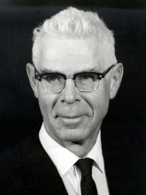

Please note: the AAS Obituaries are temporarily being hosted on this website while their full content is being ingested into the PubPub publishing platform newly adopted by the Bulletin of the American Astronomical Society. When the migration is complete, your existing links will take you to the final, migrated content. Contact peter.williams@aas.org with any questions.
John Wainwright Evans (1909-1999)
John Wainwright (Jack) Evans, a major figure in advancing the field of solar astronomy during his long and influential career, died at his home in Santa Fe, New Mexico, on October 31, 1999.
Jack was born in New York City on May 14, 1909, where his father was a newspaper reporter. In 1928 he was awarded a scholarship to Swarthmore College, where there was a 24-inch telescope and a flourishing research program. When he graduated in 1932, it was at the height of the depression. Nevertheless, he received a fellowship for graduate work in the new but small astronomy department of the University of Pennsylvania.
In an interview in August 1999, Jack recalled that the departmental administrator had previously worked for Harlow Shapley at Harvard. She felt that he had more potential than could be fully exploited in the limited department at the University of Pennsylvania. After he had completed his second year, she contacted Harlow Shapley and Jack and his wife Betty transferred to Harvard College Observatory (HCO). There he came under the guidance and influence of Shapley. Jack remarked that "HCO was one big family thanks to Shapley's interest in everyone." Fellow graduate students included James Baker, famous for designing widefield aerial cameras; Leo Goldberg; and Jesse Greenstein. Jack graduated from Harvard with an MA and a PhD in astronomy in 1936 and 1938, respectively. His thesis supervisor was Bart Bok.
Jack first spent a year as an instructor at the University of Minnesota. After that, Donald Menzel referred him to the position of instructor at Mills College in Oakland, CA. There, he worked at the Chabot Observatory and soon rose to the position of assistant professor. His time there turned out to be a "very enjoyable experience."
With the outbreak of World War II, Jack contacted one of Menzel's friends at the University of Rochester about working in his optics laboratory. Dr. Brian O'Brien hired him to work there developing special optical systems for military use. Jack commented that O'Brien was "an optical engineer par excellence" and "the most knowledgeable person in optics" that he ever knew. Jack's experience in this group during the wartime years equipped him well in his subsequent career in solar physics where he devised many very innovative and valuable astronomical instruments.
After the war the Fremont Pass Station of Harvard College Observatory became the High Altitude Observatory. Donald Menzel and Walter Roberts, the superintendent, offered Jack the position of assistant superintendent there. From 1946 to 1952, he worked in both Climax and Boulder, CO.
Given such kinds of experiences and interactions during this era, it was not surprising that Jack was selected to head up the Air Force's new Upper Air Research Observatory located at Sacramento Peak in southern New Mexico. Here he enjoyed spending the rest of his career and raising his son and two daughters with his wife, Betty. In 1956 the name of the facility was changed to Sacramento Peak Observatory (Sac Peak). Later, in 1976, the National Science Foundation replaced the Air Force as manager and the name was again changed. It became the National Solar Observatory/Sacramento Peak. For the site name, Jack chose "Sunspot, " which became its postal address.
Following his appointment to the facility at Sacramento Peak, Jack moved quickly to assemble a group of outstanding young scientists, many of whom subsequently made a major impact in solar physics. While carrying out his responsibilities as director in an exemplary manner for the next quarter century, Jack also made major contributions to the field in both instrumentation and solar research.
He led two eclipse expeditions to observe the height-resolved chromospheric spectrum; the first was to Khartoum in 1952, and the second, to Puka Puka in the South Pacific, 1958. For these he designed two slitless spectrographs, and a jumping-film camera. The data from the Khartoum eclipse were critical in establishing the relative temperatures of the solar chromosphere and photosphere.
In his 1999 interview, Jack remarked that he thought his work on the instruments and eclipse observations was probably "one of the best things" that he had ever done. Also of particular note were the detailed investigations of small-scale motions in the solar atmosphere that he started in 1960. He observed the nature of the five-minute oscillations and made the first quantitative measurements of the velocity amplitudes as a function of line strengths and heights in the solar atmosphere. He also took a special interest in flare mechanisms. For example, in 1958 he obtained data during the progress of a flare that showed, for the first time, associated changes in sunspot magnetic fields.
Jack made extremely important contributions to the development of unique instrumentation. For example, his split-element form of the Lyot birefringent filter represented a major advance in the performance of these filters; and his polarizing two-beam interferometer analog form of this filter is today the basis of many helioseismic imaging instruments. He developed an externally-occulted form of the solar coronagraph that has been used extensively in satellite coronagraphs. The same principle is incorporated in the Evans sky photometer that is used at solar observatories around the world. He also designed a double-pass spectrograph for reduction of instrumentally-scattered light in solar absorption lines. This invention was spectacularly successful, reducing scattered light to an almost undetectable level, and thus solving a most troublesome problem of determining precise line profiles. He incorporated this concept into his design of the Sac Peak spectroheliograph which is still used in daily monitoring of solar activity. Such innovations serve to convey the caliber of his work in developing powerful instruments. Indeed, he made many more, too numerous to mention here.
Jack received many honors and awards during his career, including the Newcomb Cleveland Prize of the American Association for the Advancement of Science (1957); Fellow, American Academy of Arts and Sciences (1964); Honorary Doctor of Science, University of New Mexico (1967); Honorary Doctor of Science; Swarthmore College (1970); George Ellery Hale Prize of the Solar Physics Division of the American Astronomical Society (1982); and the Richardson Medal of the Optical Society of America (1987). He also received several prizes and awards from the Air Force: the Distinguished Civilian Service Award, the highest honor that can be bestowed upon a civilian employee by the DoD (1965); the Guenter Loeser Memorial Award, AFCRL (1967); the Rockefeller Award for Distinguished Public Service (1969); and the Outstanding Achievement Award, AFOAR (1970).
Despite all his outstanding professional accomplishments, Jack is remembered principally by colleagues for his personal qualities: a gracious person, a mentor, supporter, and genuine friend. His pursuit of excellence, combined with his scientific judgment and his talent for clever instrumental development, have had a major impact on solar astronomy. But his true legacy lies not in his own accomplishments, about which he was always modest, but in his inspiring leadership, which encouraged and motivated countless young solar astronomers to reach their own potentials as scientists of note.
Photo by Jerome T. Loomis. Sacramento Peak Observatory
Obituary written by: Richard B. Dunn (National Solar Observatory), George W. Simon (National Solar Observatory), Raymond N. Smartt (National Solar Observatory), Jack B. Zirker
BAAS Citation: BAAS, 2000, 32, 1663
SAO/NASA ADS Bibcode: 2000BAAS...32.1663D